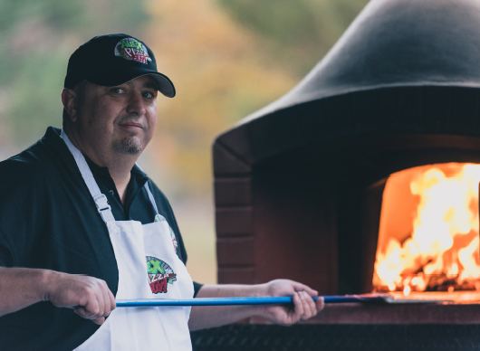

|  | In 1960, Tom Monaghan and his brother, James, took over the operation of DomiNick's, an existing location of a small pizza restaurant chain that had been owned by Dominick DiVarti, at 507 Cross Street (now 301 West Cross Street) in Ypsilanti, Michigan, near Eastern Michigan University. he deal was secured by a $500 down payment, and the brothers borrowed $900 to pay for the store. The brothers planned to split the work hours evenly, but James did not want to quit his job as a full-time postman to keep up with the demands of the new business. Within eight months, James traded his half of the business to Tom for the Volkswagen Beetle they used for pizza deliveries. |